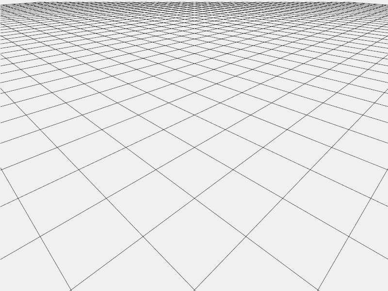

05. Perspective¶

{kind=link}
Perspective projection
1 2 3 4 5 6 7 8 9 10 11 12 13 14 15 16 17 18 19 20 21 22 23 24 25 26 27 28 29 30 31 32 33 34 35 36 37 38 39 40 41 42 43 44 45 46 47 48 49 50 51 52 53 54 55 56 57 58 59 60 61 62 63 64 65 66 67 68 69 70 71 72 73 74 75 76 77 78 79 80 81 82 83 84 85 86 | import ModernGL, GLWindow
import struct
GLWindow.Init()
ctx = ModernGL.create_context()
vert = ctx.VertexShader('''
#version 330
in vec3 vert;
uniform float znear;
uniform float zfar;
uniform float fovy;
uniform float ratio;
uniform vec3 center;
uniform vec3 eye;
uniform vec3 up;
mat4 perspective() {
float zmul = (-2.0 * znear * zfar) / (zfar - znear);
float ymul = 1.0 / tan(fovy * 3.14159265 / 360);
float xmul = ymul / ratio;
return mat4(
xmul, 0.0, 0.0, 0.0,
0.0, ymul, 0.0, 0.0,
0.0, 0.0, -1.0, -1.0,
0.0, 0.0, zmul, 0.0
);
}
mat4 lookat() {
vec3 forward = normalize(center - eye);
vec3 side = normalize(cross(forward, up));
vec3 upward = cross(side, forward);
return mat4(
side.x, upward.x, -forward.x, 0,
side.y, upward.y, -forward.y, 0,
side.z, upward.z, -forward.z, 0,
-dot(eye, side), -dot(eye, upward), dot(eye, forward), 1
);
}
void main() {
gl_Position = perspective() * lookat() * vec4(vert, 1.0);
}
''')
frag = ctx.FragmentShader('''
#version 330
out vec4 color;
void main() {
color = vec4(0.04, 0.04, 0.04, 1.0);
}
''')
width, height = GLWindow.GetSize()
prog = ctx.Program([vert, frag])
prog.uniforms['znear'].value = 0.1
prog.uniforms['zfar'].value = 1000.0
prog.uniforms['ratio'].value = width / height
prog.uniforms['fovy'].value = 60
prog.uniforms['eye'].value = (3, 3, 3)
prog.uniforms['center'].value = (0, 0, 0)
prog.uniforms['up'].value = (0, 0, 1)
grid = bytes()
for i in range(0, 65):
grid += struct.pack('6f', i - 32, -32.0, 0.0, i - 32, 32.0, 0.0)
grid += struct.pack('6f', -32.0, i - 32, 0.0, 32.0, i - 32, 0.0)
vbo = ctx.Buffer(grid)
vao = ctx.SimpleVertexArray(prog, vbo, '3f', ['vert'])
while GLWindow.Update():
ctx.clear(240, 240, 240)
vao.render(ModernGL.LINES, 65 * 4)
|